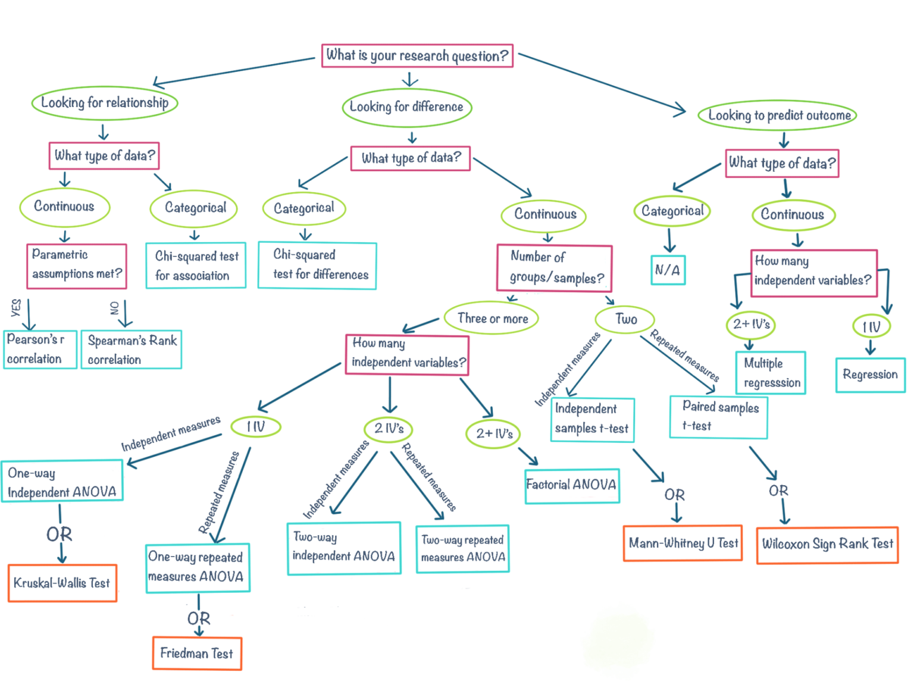
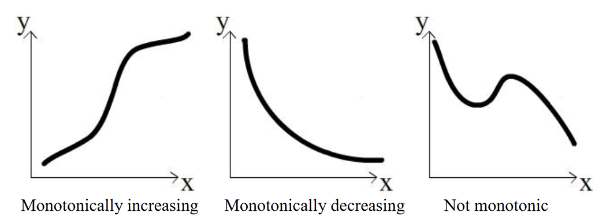
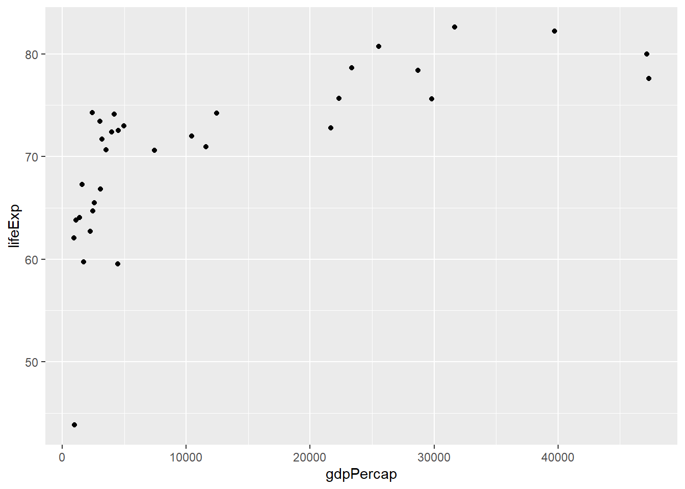
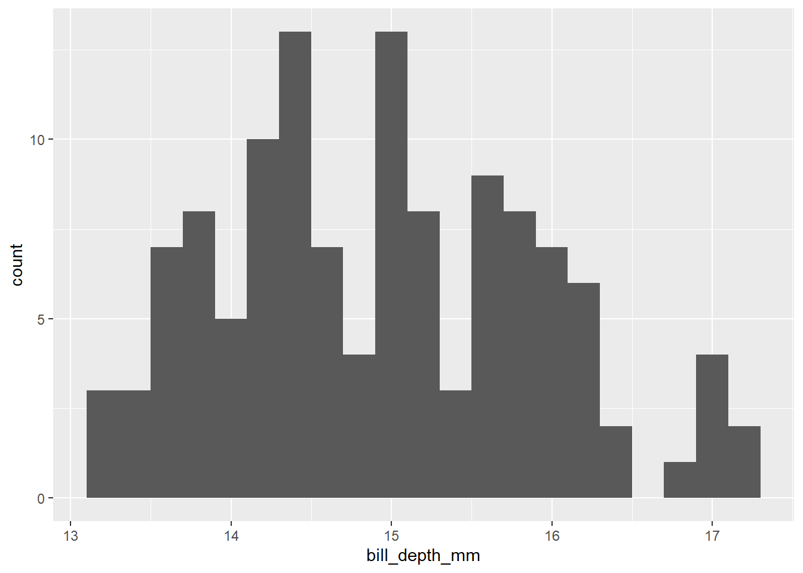
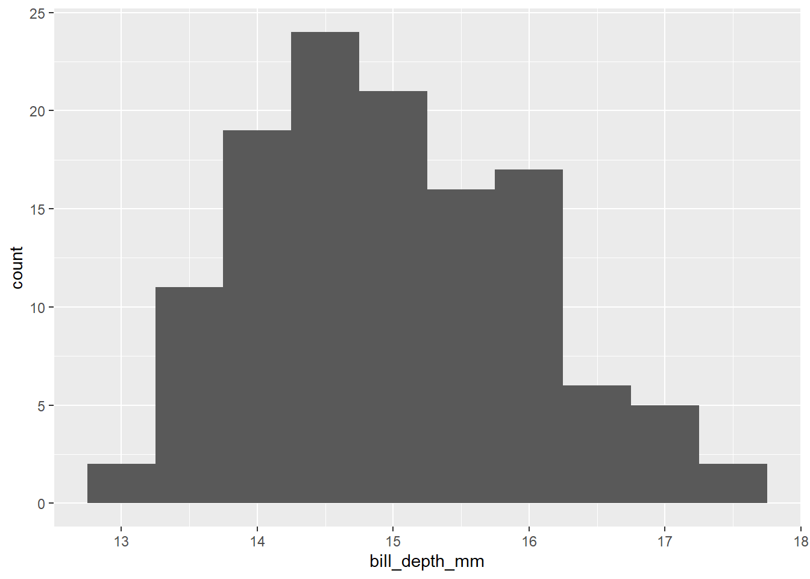
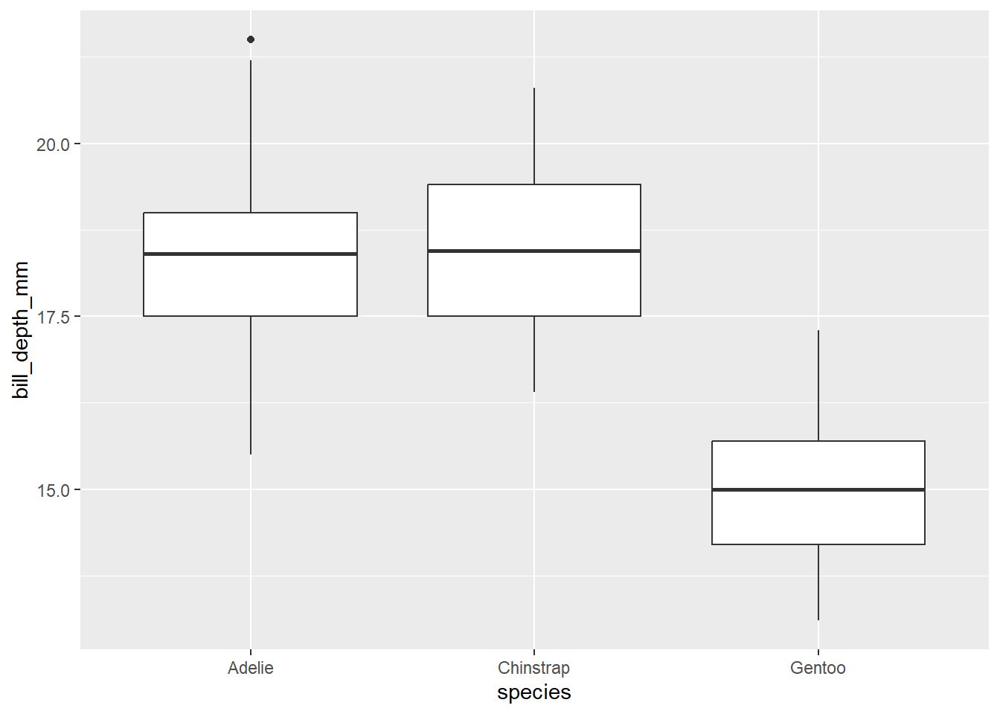

library(modeldata)
table(scat$Species,scat$ropey)
0 1
bobcat 24 33
coyote 13 15
gray_fox 11 14The particular hypothesis test you’ll use will depend on the kind of data you have, the number of variables, and whether certain assumptions about the a data can be met. Below is a flow chart that can guide you to select a test (click the link to see a larger version).

You may have seen one of these before, they are a common feature of statistics courses. These are meant to be a guide rather than a definitive statement on choice of test, and this list is by no means exhaustive. You may find that your data have some particulars not covered in this chart, in which case you may need to look at alternative tests.
For now, let’s go through a couple of examples using data we have seen before to show how you might choose a test using this chart.
Let’s say we wanted to know whether a ropey or segmented appearance is a clear indicator of species in the scat dataset. First we,’ll start with ropeyness:
State the hypothesis: There is no difference in the frequency of ropey scat appearance among grey foxes, coyotes, and bobcats. We will use 0.05 as our threshold for rejection.
Collect the data: The data are the scat dataset from the modeldata package, specifically the Species and ropey columns. The Species column is nominal (character) data, while the ropey column is a binary (0 or 1) value representing a true/false, which is also nominal. We can look at these frequencies ourselves by using the table function:
library(modeldata)
table(scat$Species,scat$ropey)
0 1
bobcat 24 33
coyote 13 15
gray_fox 11 14From this table, it appears that ropeyness is something that is more common than not among all species.
Perform a test: Here we are looking for a difference between species, and our data is nominal and therefore categorical. The flow chart above suggests we should use the chi-squared test for association.
The assumptions of the chi-squared test can be found here. An important one is that there has to be enough data so that each combination of categories in the table above could be at least 5. In our case, since there are 6 different combinations, we need at least 30 observations. The scat dataset exceeds this threshold.
The chisq.test function in R lets us run this test on our data. Note here that we are using the $ notation to access each column, and delivering them in x, y order:
chisq.test(scat$Species,scat$ropey)
Pearson's Chi-squared test
data: scat$Species and scat$ropey
X-squared = 0.14443, df = 2, p-value = 0.9303The test statistic \(\chi^2\) is an indicator of whether there is a difference in how the categories in both variables are associated with one another. The degrees of freedom in this case is the number of categories in one variable multiplied by the number of categories in the other (or 2 x 1 here).
Interpret the p-value: In this case our p-value is around 0.93, which is well above the 0.05 threshold for rejection. In this case, we cannot reject the null hypothesis that there is no difference in ropey scat frequencies among the three species studied here.
Let’s try this process again, only this time we will evaluate segmented appearance:
State the hypothesis: There is no difference in the frequency of segmented scat appearance among grey foxes, coyotes, and bobcats. We will use 0.05 as our threshold for rejection.
Collect the data: Same as above, but with the segmented column in place of the ropey column. The segmented data are also binary (0/1) values.
table(scat$Species,scat$segmented)
0 1
bobcat 15 42
coyote 14 14
gray_fox 19 6Just looking at these numbers, there appear to be notable differences between the frequencies for each species. Bobcats, for example, are far more likely to have segmented scat. Gray foxes? Not so much.
Perform a test: Once again, we will use the chi-squared test to evaluate difference among nominal variables:
chisq.test(scat$Species,scat$segmented)
Pearson's Chi-squared test
data: scat$Species and scat$segmented
X-squared = 18.06, df = 2, p-value = 0.0001198Interpret the p-value: In this case our p-value is well below the 0.05 threshold for rejection, so we can safely reject the null hypothesis that there is no difference in segmented scat frequencies between the studied species of mesopredators.
Let’s say we wanted to know whether a relationship exists between per capita GDP and life expectancy among countries in Asia.
State the hypothesis: There is no relationship between per capita GDP and life expectancy in 2007 among measured countries in Asia.
Collect the data: The data are from the gapminder dataset from the package of the same name, specifically the gdpPercap and lifeExp columns. These will be susbet to measures from Asia from the year 2007. Both are ratio (continuous) variables.
library(gapminder)
#create a subset for just data from Asia
asia<-filter(gapminder,continent=="Asia")
#subset that data to just 2007
asia2007<-filter(asia,year==2007)Perform a test: Here we are looking at a relationship between continuous variables; in other words, a correlation. Following the flow chart, it asks about whether parametric assumptions have been met. This means, like our t-test, the data are expected to follow a normal distribution. We can test this using the shapiro.test function. First for GDP:
shapiro.test(asia2007$gdpPercap)
Shapiro-Wilk normality test
data: asia2007$gdpPercap
W = 0.77551, p-value = 1.139e-05And then for life expectancy:
shapiro.test(asia2007$lifeExp)
Shapiro-Wilk normality test
data: asia2007$lifeExp
W = 0.92228, p-value = 0.02119In both cases, the p-value is less than 0.05, so we can reject the notion that either of these is distributed normally. This means we should not use the Pearson correlation with the data as is, so we’ll use the Spearman correlation.1
If you’re using the flowchart above, and it brings you to a test you’re unfamiliar with, it’s a good idea to take a moment to learn about the test, its applications, and its assumptions before proceeding. Even if you think you might never use this test again, it’s worth spending a few minutes to read up on it first and try to understand why the test is appropriate in this case. The R help for the function is a place to start. and this will often include links to some of the original publications about these methods, but there are some other resources at the bottom of the page that you can also check out.
The assumptions of the Spearman method can be found here. An important one is that the relationship needs to be monotonic; that is, as the value in the independent variable increases, the value of the response variable must either increase or decrease, but it can’t go up then down or vice versa.

We can look at the data visually to assess this quality:
ggplot(asia2007,aes(x=gdpPercap,y=lifeExp)) +
geom_point()
We can see from this plot that the life expectancy values generally increase from left to right, so the criteria is met. We can now run our test using the cor.test function in R, and giving it our two columns as arguments along with method="Spearman" to use the correct approach for our data:
cor.test(asia2007$gdpPercap,asia2007$lifeExp,method="spearman")
Spearman's rank correlation rho
data: asia2007$gdpPercap and asia2007$lifeExp
S = 980, p-value = 3.076e-07
alternative hypothesis: true rho is not equal to 0
sample estimates:
rho
0.8362299 The rho value, listed at the bottom, can go from -1 to 1; this is equivalent to the correlation coefficient produced by the cor function we learned about earlier in the course. A negative value indicates a decreasing relationship, while a positive value indicates an increasing relationship. The closer the value is to one or the other of these extremes tells us how close it is to a perfectly increasing or perfectly decreasing relationship.
Interpret the p-value: The p-value is well under our threshold of 0.05, so we can reject the null hypothesis that there is no relationship between these two variables.
As a final example, we’ll ask a similar question of the penguin data that we started with, but this time we’ll look at bill depth as an independent variable, and instead of only two species, we’ll look at all three.
State the hypothesis: There is no difference in bill depth between the three recorded penguin species recorded from the Palmer Archipelago.
Collect the data: The data are from the penguins dataset from the modeldata package of the same name, specifically the bill_depth_mm and species columns. The former is a ratio (continuous) variable, while the latter is a nominal (categorical) variable with three groups.
Perform a test: To test for differences in one continuous variable across more than two groups, we’re likely looking at some version of an Analysis of Variance test, usually referred to as ANOVA. Since we’re looking at differences in a continuous variable, the assumptions we had from the t-test will also apply here: equal variances and normality in bill depth among the three groups.
Levene’s test is often used to assess equal variance across multiple groups. This test can be accessed from the car package, with the formula bill_depth_mm ~ species to indicate we are interested in bill depth by species.
library(car)Loading required package: carData
Attaching package: 'car'The following object is masked from 'package:dplyr':
recodeThe following object is masked from 'package:purrr':
someleveneTest(bill_depth_mm ~ species, data = penguins)Levene's Test for Homogeneity of Variance (center = median)
Df F value Pr(>F)
group 2 2.0369 0.132
339 The p-value being greater than 0.05 indicates homogeneous (equal) variances in bill depths across the three groups can be assumed. Next, we can use the Shapiro test to assess normality.
chinstrap<-filter(penguins,species=="Chinstrap")
shapiro.test(chinstrap$bill_depth_mm)
Shapiro-Wilk normality test
data: chinstrap$bill_depth_mm
W = 0.97274, p-value = 0.1418gentoo<-filter(penguins,species=="Gentoo")
shapiro.test(gentoo$bill_depth_mm)
Shapiro-Wilk normality test
data: gentoo$bill_depth_mm
W = 0.97609, p-value = 0.0277adelie<-filter(penguins,species=="Adelie")
shapiro.test(adelie$bill_depth_mm)
Shapiro-Wilk normality test
data: adelie$bill_depth_mm
W = 0.98467, p-value = 0.09249Here, we can see that we normality of bill depths can be assumed for Chinstrap and Adelie penguins, this is not the case for Gentoo. It’s worth having a look at this data before we proceed to choose a parametric or non-parametric version of this test. We can do this with a histogram of the Gentoo penguin bill depths:
ggplot(gentoo,aes(bill_depth_mm)) +
geom_histogram(binwidth=0.2)
We can see in graph that there is some irregularity in this distribution, with some peaks and valleys, and possibly a bit of a right skew. But it also has some features that appear normal-ish. It’s hard to tell whether these deviations actually reflected in the population, or just an artifact of sampling. We can get another view of the data by increasing the binwidth to see if it looks normal at a broader scale:
ggplot(gentoo,aes(bill_depth_mm)) +
geom_histogram(binwidth=0.5)
Again, it looks just slightly off normal. Given this is a borderline case, we might consider proceeding with the ANOVA, which is a more powerful test than its non-parametric counterpart. A quick and dirty way to get the results of an ANOVA are to use the oneway.test function:
oneway.test(bill_depth_mm ~ species, data = penguins)
One-way analysis of means (not assuming equal variances)
data: bill_depth_mm and species
F = 400.61, num df = 2.00, denom df = 177.15, p-value < 2.2e-16The two important statistics here are F, which is comparing the mean squared variance between groups to the mean squared variance within groups. This is a ratio: something close to 1 would suggest not much difference between them, while higher numbers indicate that the between group variance exceeds that recorded within the groups. The other, of course, is the p-value.
A second approach is to use the aov function. The difference here is that oneway.test automatically uses a correction for unequal variances; however, since our data doesn’t have this issue (as we saw from Levene’s test), we can use aov instead. The structure is the same, but when we run it, we will store it to an object, and then use the summary function to see the result:
anovaBills<-aov(bill_depth_mm ~ species, data = penguins)
summary(anovaBills) Df Sum Sq Mean Sq F value Pr(>F)
species 2 904.0 452.0 359.8 <2e-16 ***
Residuals 339 425.9 1.3
---
Signif. codes: 0 '***' 0.001 '**' 0.01 '*' 0.05 '.' 0.1 ' ' 1
2 observations deleted due to missingnessThe outcome is similar to the oneway.test, with only slight differences in the F statistic. Storing the result as an object becomes useful to us later.
However, if we are maintaining strict adherence to the assumptions of the test, we can use a non-parametric version, which is the Kruskall-Wallis test:
kruskal.test(bill_depth_mm ~ species, data = penguins)
Kruskal-Wallis rank sum test
data: bill_depth_mm by species
Kruskal-Wallis chi-squared = 224.56, df = 2, p-value < 2.2e-16Interpret the p-value: The p-value for both the parametric (ANOVA) and the non-parametric (Kruskal-Wallis) tests is well below 0.05, suggesting that bill depth is statistically different for at least one of our groups. We can see how this is the case by visualizing the distributions of these groups with a boxplot.
ggplot(penguins,aes(species,bill_depth_mm)) +
geom_boxplot()
From this we can see the Gentoo penguin bill depths are notably shorter, so that likely explains the result of the test; however, it may still be the case that Adelie and Chinstrap penguins are statistically distinguishable by bill depth, despite looking similar in the plot.
How might be go about telling which groups are statistically different from one another? We could run independent t-tests on all of these combinations, but that might be cumbersome. There are a couple of functions that can help us quickly assess this as well. One is TukeyHSD, which conducts the Tukey Honest Significant Differences test:
TukeyHSD(anovaBills) Tukey multiple comparisons of means
95% family-wise confidence level
Fit: aov(formula = bill_depth_mm ~ species, data = penguins)
$species
diff lwr upr p adj
Chinstrap-Adelie 0.07423062 -0.3110995 0.4595607 0.8928875
Gentoo-Adelie -3.36424379 -3.6847143 -3.0437733 0.0000000
Gentoo-Chinstrap -3.43847441 -3.8371903 -3.0397586 0.0000000This table is telling us the differences in means, and the interval that difference might be expected in given the sample sizes, and then the p-value for the difference we actually got. What this tell us is more or less what we saw in the boxplot: that there’s no detectable difference in mean bill depth between Chinstrap and Adelie penguins, but the difference between Gentoo and the two other species is unlikely to have arisen by chance.
For Kruskal-Wallis, the Dunn test from the rstatix package performs the same function (scroll over to see the resultant p-value for each pair):
library(rstatix)
Attaching package: 'rstatix'The following object is masked from 'package:stats':
filterdunn_test(bill_depth_mm ~ species, data = penguins)# A tibble: 3 × 9
.y. group1 group2 n1 n2 statistic p p.adj p.adj.signif
* <chr> <chr> <chr> <int> <int> <dbl> <dbl> <dbl> <chr>
1 bill_depth… Adelie Chins… 151 68 0.445 6.56e- 1 6.56e- 1 ns
2 bill_depth… Adelie Gentoo 151 123 -13.7 6.75e-43 2.02e-42 ****
3 bill_depth… Chins… Gentoo 68 123 -11.5 1.97e-30 3.94e-30 **** The objective here is not to make you an expert at hypothesis testing, and but rather to help develop familiarity with what a hypothesis testing process looks like and how to go about it in R. If you have the correct choice of test and the assumptions accounted for, you can usually implement a hypothesis test with a single line of code. But meeting those standards is very important for making sure your work is conducted appropriately.
There are endless resources out there for identifying the correct test for your data and hypothesis, as well as determining what the assumptions are of your test. Here are just a few to get your started:
YaRrr: The Pirate’s Guide to R has a great section on hypothesis tests using examples from the world of pirates
UC Business Analytics R Programming Guide discusses a wider range of hypothesis tests beyond those covered here
UCLA Statistical Methods and Data Analytics has a detailed guide to selecting a test, along with links to their R implementation
What’s the difference? The Pearson correlation evaluates the strength of the relationship between the variables using their values; the Spearman method treats them in terms of the ranked positions of each data point.↩︎